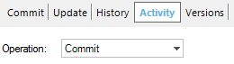
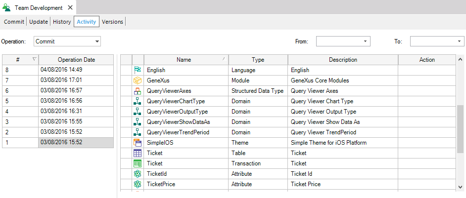

Activity is a Team Development dialog tab which shows the history of the local activity of a Knowledge Base connected to GeneXus Server. This means the history of Updates, Bring changes, Locks, Steal Locks and Commits, including all the objects of each operation. The wanted operation can be chosen by changing the value of the Operation Combobox:  This information's very useful for a Developer to have more control in the history of the entire Knowledge Base.  |